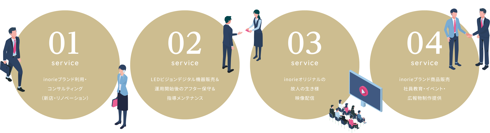
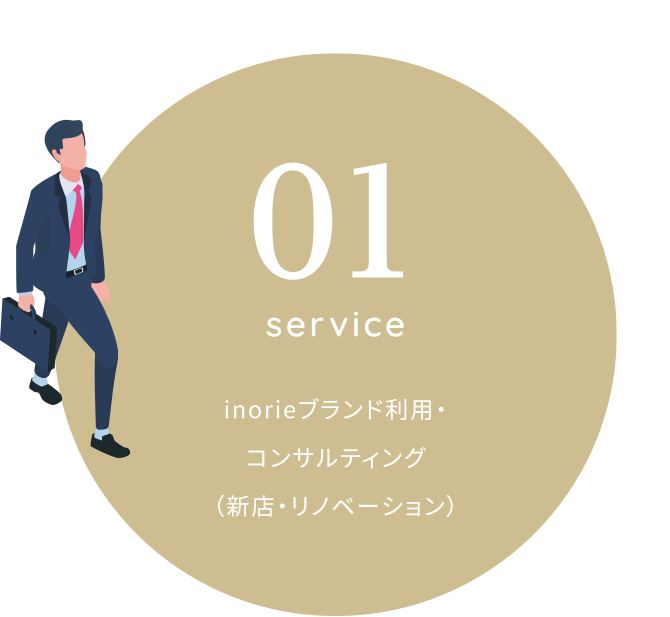
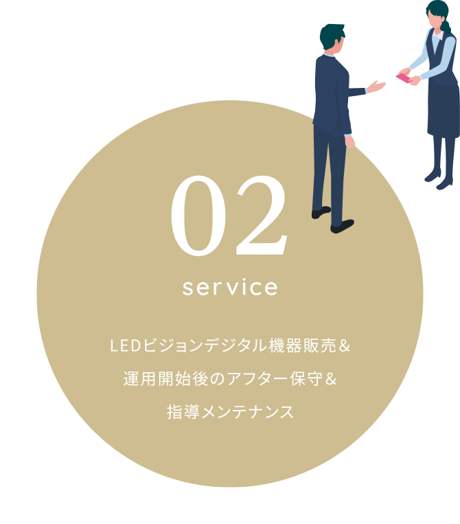
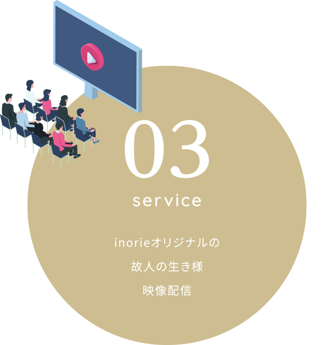
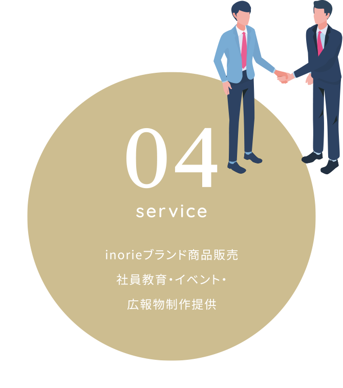
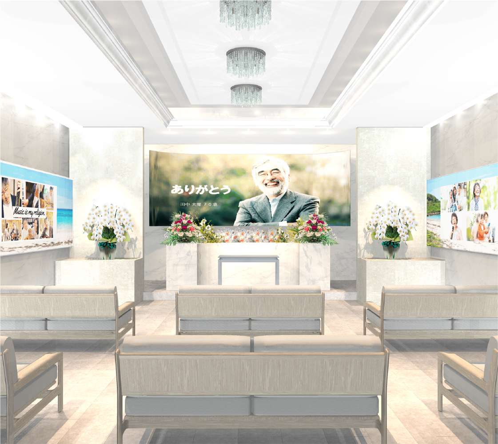
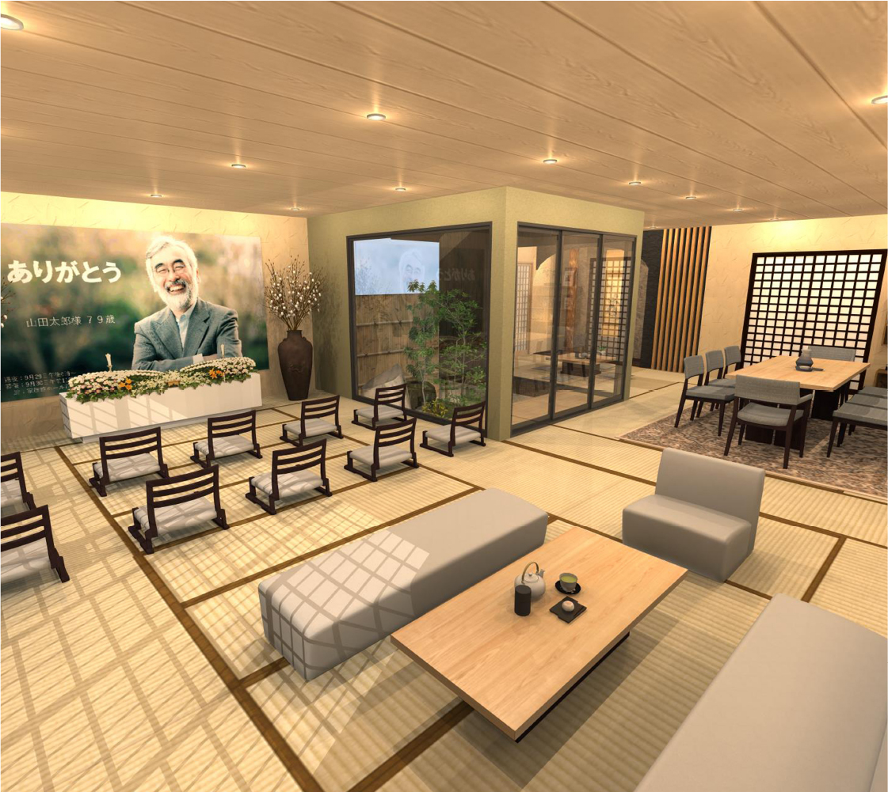
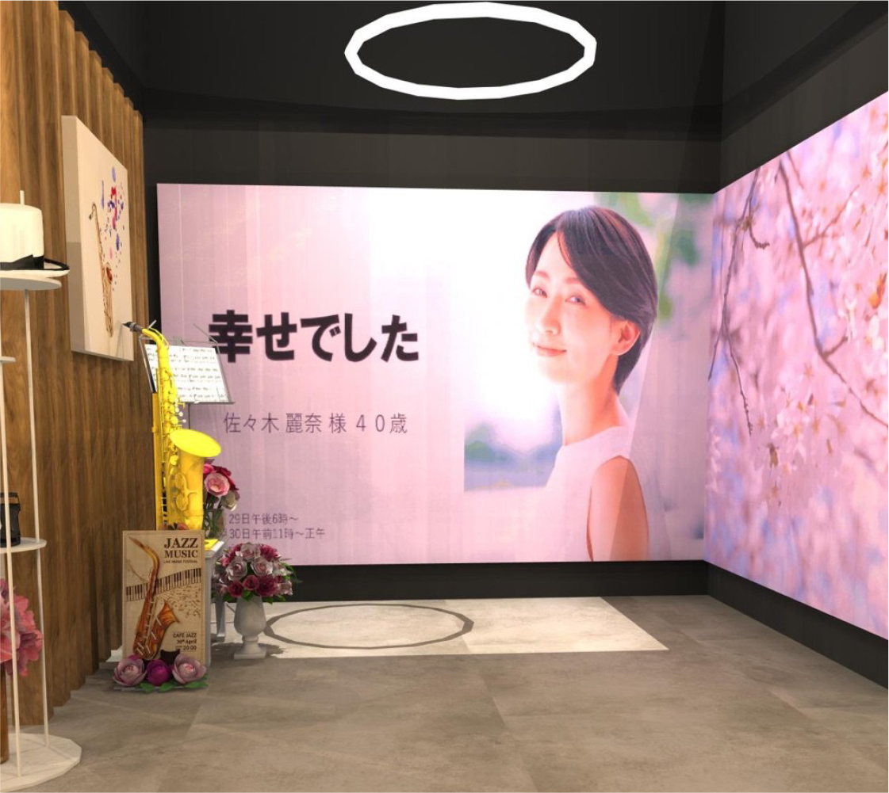

A funeral space where "thank you"
gathers through four services.
4つのサービスを通じて、
「ありがとう」が集う葬送空間。
SERVICE
サービス内容
誰もが簡単に
画面切り替え操作が出来る
ワンタッチ機能です。
Anyone can easily switch
screens One touch function
inoriationのLEDビジョンは簡単便利に誰もが使えるのが特徴です。 出来上がった画像シーンは、inoriationオペレーターが遠隔操作でパソコンにセット致します。色々なお葬式の場面での演出は、各シーンの割り付けキーボードボタンを指一本でタッチするだけです。





映像配信サービス
- SIGNAGE 01- 遺影制作
- SIGNAGE 02- 入場ゲート遺影看板制作（名旗看板の映像版）
- SIGNAGE 03- 故人の生き様動画（history）
- SIGNAGE 04- コラージュ（omoide）
- SIGNAGE 05- 宗教式典画像（檀家寺を映像で再現）
- SIGNAGE 06- 思い出の地や風景動画（iyashi/care）
- SIGNAGE 07- リモート配信（zoomなど）
- SIGNAGE 08- メッセージボード（葬儀社側から遺族へ）
- SIGNAGE 09- お礼状（kansha）
- SIGNAGE 10- 故人様へメッセージ交換（empathy）
- SIGNAGE 11- 携帯カメラ画像を直接LED画面へ（share）/アプリ開発中
LEDビジョンスペック
2・0㎜屋内用LEDディスプレイ
故人様との想い出が美しく甦る
高精細で美しいLEDビジョン
2.0 mm indoor LED display.
Beautiful memories with the deceased revived.
High-definition and beautiful LED vision.
高精細2.0㎜ピッチ
高解像度。LEDディスプレイとは思えない鮮明な映像を実現。
視認距離最短１m。小スペースから大ホールまで対応可能です。
モジュール交換・ドライバー不要
モジュールは、LEDタイルにマグネットに貼り付けるという画期的な構造を採用。
容易にモジュール交換が専用具で簡単に交換。現場で起こりがちなトラブルを回避できる安心設計です。
ご遺族の心に
寄り添える形を
常に創造
することが、
inoriationの
役割です。
A shape that is close to
the heart of the bereave
d familyAlways creating
The role of inoriation.
想い出映像・コラージュ・宗教儀礼・リモート・遺影・風景画像など葬儀社様オリジナルの映像をお作りしてお届け致します。
| ピクセルピッチ | 2mm |
|---|
| 解像度 | 250.000Dots／m2 |
|---|
| 寸法 | 640mm × 480mm |
|---|
| 視野角度 | 水平160°／垂直160° |
|---|
| フレッシュレート | 3,840Hz |
|---|
| 明るさ | 600〜900cd／m2 |
|---|
| パネル重量 | 9.5kg／pc |
|---|
| パネル材料 | ダイカストアルミ |
|---|
| 最大消費電力 | 600W／m2・Average:210W／m2 |
|---|
| 使用寿命 | 100,000 hours |
|---|
| 電圧 | AC110〜220V+-10%／50〜60Hz |
|---|
各種お問い合わせ
inoriationのサービスや、各種業務に関するご相談、inoriationショールームへの見学、その他ご質問やご不明点は、お気軽にお問い合わせください。
-

葬祭業新規参入をご検討の方
-

葬儀会館の新設やリフォームをご検討の方
-

企業のブランド化をご検討の方